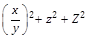
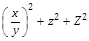
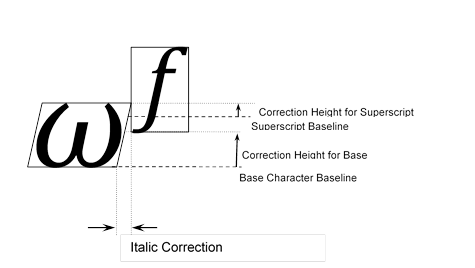

Note
Access to this page requires authorization. You can try signing in or changing directories.
Access to this page requires authorization. You can try changing directories.
Overview
Mathematical formulas are complex text objects in which multiple elements with various metric, style or positioning attributes are combined. In order for a math layout engine to support layout of mathematical formulas, several types of font-specific information particular to the layout of formulas are required. The MATH table provides this font-specific information necessary for math formula layout.
Note that this is not a complete specification of math layout. The MATH table provides font data required for math layout, but detailed algorithms for use of the data are not specified. Different math layout engine implementations can use this data to produce different layout results in accordance with different purposes or goals.
Layout of math formulas is quite different from regular text layout that is done using tables such as GSUB and GPOS. Regular text layout mainly deals with a line of text, often formatted with a single font. In this situation, actions such as contextual substitution or kerning can be done with access to the complete context of the line of text, and the rules can be expressed in terms of known glyph sequences. Math layout is quite different from this.
The general structure of math formulas is hierarchical, with formulas composed of smaller sub-formula expressions, where each expression may be composed of even simpler expressions, and so on down to individual strings — operator symbols, variable names and numbers.

Likewise, the process of math formula layout is also recursive. Child components are formatted first and then arranged to form their parent’s layout with this process repeated on every level starting from simplest blocks up to the whole formula. Each sub-formula has its own component structure and rules for how to perform layout. For example, a fraction expression consists of numerator and denominator sub-expressions, which will be placed on top one another with a fraction rule separating them. An integral expression contains an integral sign, optional upper-limit and lower-limit expressions, and a following sub-expression.
The simplest blocks within a formula typically contain strings. In isolation, each could be laid out by regular text-layout processing using other tables such as GSUB and GPOS. Math layout goes beyond this. It deals mainly with layout processing involved in composing these simple blocks together into a complex, hierarchical formula. The data provided in the MATH table allows math layout processing to be typographically aware, so that presentation with high typographic quality can be achieved.
A math layout engine works with boxes representing individual formula components as units of layout. During the layout process, individual boxes can be arranged relative to each other; they can be stretched, depending on the sizes of other boxes they interact with; or they can use different glyph variants, based on the box size or position in the formula. The MATH table provides data that informs how these operations are done. Each box has an associated font that supplies information comprising typographic requirements for that box. These may be requirements for that box alone, based on the results of layout operations internal to the box; or they may be requirements on how other boxes interact with that box in layout.
By providing information about a font generally or about specific glyphs in the font, the MATH table can enable math-layout engines to produce layout that is appropriate for the font design, and that realizes the font’s full typographic potential by using stylistic and stretching glyph variants provided by the font.
MATH table structures
Shared formats: MathValueRecord, Coverage table
MathValueRecord
MATH subtables use math value records to describe values that place or adjust elements of math formulas. These values are expressed in font design units.
A MathValueRecord may also specify an offset to a device table which provides corrections to a given value at particular display resolutions. The device table format is described in the OpenType Layout Common Table Formats chapter. The device table can provide multiple correction values to be used for several different PPEM sizes. Different formats for representing the correction values are provided to allow for efficient representation, according to the size requirements of the correction values. When used in MathValueRecords, format 1 is recommended.
When designing a MATH table, device tables can be specified for many values used for positioning elements of a formula. This creates the potential that many device corrections could accumulate in a given layout. However, such accumulation would result in metrics for formula elements that are significantly different from scale-adjusted dimensions of the same elements rendered on a high-resolution device. It would produce inconsistencies between screen and print renditions, and could also lead to clipping. For these reasons, accumulation of many corrections is undesirable.
While a font may specify device corrections, use of these corrections is under the control of a given layout engine implementation. To maintain consistency across devices with different resolutions, an engine may limit the number of device corrections that are accumulated, or may ignore them altogether. A layout engine may also supply its own corrections where none are indicated in the font. Since the accumulated size of corrections should be kept to a minimum, it is recommended that device tables referenced by a MathValueRecord use format 1 for representation of correction values. This format allows corrections of at most -2 to +1 pixels. The recommended values to use in MathValueRecords are -1, 0, or 1.
MathValueRecord
| Type | Name | Description |
|---|---|---|
| FWORD | value | The X or Y value in design units. |
| Offset16 | deviceOffset | Offset to the device table, from the beginning of parent table. May be NULL. Suggested format for device table is 1. |
Coverage table
MATH subtables make use of Coverage tables, defined in the OpenType Layout Common Table Formats chapter, to specify sets of glyphs. All Coverage table formats may be used in the MATH table.
MATH Header
The MATH table begins with a header that consists of a version number for the table (majorVersion/minorVersion), which is currently set to 1.0, and specified offsets to the following tables that store information on positioning of math formula elements:
- MathConstants table stores font parameters to be used in typesetting of each supported mathematical function, such as a fraction or a radical.
- MathGlyphInfo table supplies positioning information that is defined on a per-glyph basis.
- MathVariants table contains information to be used in constructing glyph variants of different height or width, either by finding a pre-defined glyph with desired measurements in the font, or by assembling the required shape from pieces found in the glyph set.
MATH Header
| Type | Name | Description |
|---|---|---|
| uint16 | majorVersion | Major version of the MATH table, = 1. |
| uint16 | minorVersion | Minor version of the MATH table, = 0. |
| Offset16 | mathConstantsOffset | Offset to MathConstants table, from the beginning of MATH table. |
| Offset16 | mathGlyphInfoOffset | Offset to MathGlyphInfo table, from the beginning of MATH table. |
| Offset16 | mathVariantsOffset | Offset to MathVariants table, from the beginning of MATH table. |
MathConstants table
The MathConstants table defines a number of constants required to properly position elements of mathematical formulas. These constants belong to several groups of semantically-related values, such as values for positioning of accents, positioning of superscripts and subscripts, and positioning of elements of fractions. The table also contains general-use constants that may affect all parts of the formula, such as axis height and math leading. Note that most of the constants deal with aspects of vertical positioning.
In most cases, values in the MathConstants table are assumed to be positive. For example, for descenders and shift-down values a positive constant signifies movement in a downwards direction. Most values in the MathConstants table are represented by a MathValueRecord, which allows the font designer to supply device corrections to those values when necessary.
For values that pertain to layout interactions between a base and dependent elements (e.g., superscripts or limits), the specific value used is taken from the font associated with the base, and the size of the value is relative to the size of the base.
The following naming convention are used for fields in the MathConstants table:
- Height — Specifies a distance from the main baseline.
- Kern — Represents a fixed amount of empty space to be introduced.
- Gap — Represents an amount of empty space that may need to be increased to meet certain criteria.
- Drop and Rise — Specifies the relationship between measurements of two elements to be positioned relative to each other (but not necessarily in a stack-like manner) that must meet certain criteria. For a Drop, one of the positioned elements has to be moved down to satisfy those criteria; for a Rise, the movement is upwards.
- Shift — Defines a vertical shift applied to an element sitting on a baseline. Note that the value is an amount of adjustment to the position of an element, not the resulting distance from the baseline or other reference line.
- Dist — Defines a distance between baselines of two elements.
The descriptions for several fields refer to default rule thickness. Layout engines control how rules are drawn and how their thickness is set. It is recommended that rules have the same thickness as a minus sign, low line, or a similar font value such as OS/2.yStrikeoutSize. For fields that are described in reference to default rule thickness, one of these should be assumed.
MathConstants table
| Type | Name | Description |
|---|---|---|
| int16 | scriptPercentScaleDown | Percentage of scaling down for level 1 superscripts and subscripts. Suggested value: 80%. |
| int16 | scriptScriptPercentScaleDown | Percentage of scaling down for level 2 (scriptScript) superscripts and subscripts. Suggested value: 60%. |
| UFWORD | delimitedSubFormulaMinHeight | Minimum height required for a delimited expression (contained within parentheses, etc.) to be treated as a sub-formula. Suggested value: normal line height × 1.5. |
| UFWORD | displayOperatorMinHeight | Minimum height of n-ary operators (such as integral and summation) for formulas in display mode (that is, appearing as standalone page elements, not embedded inline within text). |
| MathValueRecord | mathLeading | White space to be left between math formulas to ensure proper line spacing. For example, for applications that treat line gap as a part of line ascender, formulas with ink going above (os2.sTypoAscender + os2.sTypoLineGap - MathLeading) or with ink going below os2.sTypoDescender will result in increasing line height. |
| MathValueRecord | axisHeight | Axis height of the font. In math typesetting, the term axis refers to a horizontal reference line used for positioning elements in a formula. The math axis is similar to but distinct from the baseline for regular text layout. For example, in a simple equation, a minus symbol or fraction rule would be on the axis, but a string for a variable name would be set on a baseline that is offset from the axis. The axisHeight value determines the amount of that offset. |
| MathValueRecord | accentBaseHeight | Maximum (ink) height of accent base that does not require raising the accents. Suggested: x‑height of the font (os2.sxHeight) plus any possible overshots. |
| MathValueRecord | flattenedAccentBaseHeight | Maximum (ink) height of accent base that does not require flattening the accents. Suggested: cap height of the font (os2.sCapHeight). |
| MathValueRecord | subscriptShiftDown | The standard shift down applied to subscript elements. Positive for moving in the downward direction. Suggested: os2.ySubscriptYOffset. |
| MathValueRecord | subscriptTopMax | Maximum allowed height of the (ink) top of subscripts that does not require moving subscripts further down. Suggested: 4/5 x- height. |
| MathValueRecord | subscriptBaselineDropMin | Minimum allowed drop of the baseline of subscripts relative to the (ink) bottom of the base. Checked for bases that are treated as a box or extended shape. Positive for subscript baseline dropped below the base bottom. |
| MathValueRecord | superscriptShiftUp | Standard shift up applied to superscript elements. Suggested: os2.ySuperscriptYOffset. |
| MathValueRecord | superscriptShiftUpCramped | Standard shift of superscripts relative to the base, in cramped style. |
| MathValueRecord | superscriptBottomMin | Minimum allowed height of the (ink) bottom of superscripts that does not require moving subscripts further up. Suggested: ¼ x-height. |
| MathValueRecord | superscriptBaselineDropMax | Maximum allowed drop of the baseline of superscripts relative to the (ink) top of the base. Checked for bases that are treated as a box or extended shape. Positive for superscript baseline below the base top. |
| MathValueRecord | subSuperscriptGapMin | Minimum gap between the superscript and subscript ink. Suggested: 4 × default rule thickness. |
| MathValueRecord | superscriptBottomMaxWithSubscript | The maximum level to which the (ink) bottom of superscript can be pushed to increase the gap between superscript and subscript, before subscript starts being moved down. Suggested: 4/5 x-height. |
| MathValueRecord | spaceAfterScript | Extra white space to be added after each subscript and superscript that occurs after a baseline element, and before each subscript and superscript that occurs before a baseline element. Suggested: 0.5 pt for a 12 pt font. Note that, in some math layout implementations, a constant value, such as 0.5 pt, could be used for all text sizes. Some implementations could use a constant ratio of text size, such as 1/24 of em. |
| MathValueRecord | upperLimitGapMin | Minimum gap between the (ink) bottom of the upper limit, and the (ink) top of the base operator. |
| MathValueRecord | upperLimitBaselineRiseMin | Minimum distance between baseline of upper limit and (ink) top of the base operator. |
| MathValueRecord | lowerLimitGapMin | Minimum gap between (ink) top of the lower limit, and (ink) bottom of the base operator. |
| MathValueRecord | lowerLimitBaselineDropMin | Minimum distance between baseline of the lower limit and (ink) bottom of the base operator. |
| MathValueRecord | stackTopShiftUp | Standard shift up applied to the top element of a stack. |
| MathValueRecord | stackTopDisplayStyleShiftUp | Standard shift up applied to the top element of a stack in display style. |
| MathValueRecord | stackBottomShiftDown | Standard shift down applied to the bottom element of a stack. Positive for moving in the downward direction. |
| MathValueRecord | stackBottomDisplayStyleShiftDown | Standard shift down applied to the bottom element of a stack in display style. Positive for moving in the downward direction. |
| MathValueRecord | stackGapMin | Minimum gap between (ink) bottom of the top element of a stack, and the (ink) top of the bottom element. Suggested: 3 × default rule thickness. |
| MathValueRecord | stackDisplayStyleGapMin | Minimum gap between (ink) bottom of the top element of a stack, and the (ink) top of the bottom element in display style. Suggested: 7 × default rule thickness. |
| MathValueRecord | stretchStackTopShiftUp | Standard shift up applied to the top element of the stretch stack. |
| MathValueRecord | stretchStackBottomShiftDown | Standard shift down applied to the bottom element of the stretch stack. Positive for moving in the downward direction. |
| MathValueRecord | stretchStackGapAboveMin | Minimum gap between the ink of the stretched element, and the (ink) bottom of the element above. Suggested: same value as upperLimitGapMin. |
| MathValueRecord | stretchStackGapBelowMin | Minimum gap between the ink of the stretched element, and the (ink) top of the element below. Suggested: same value as lowerLimitGapMin. |
| MathValueRecord | fractionNumeratorShiftUp | Standard shift up applied to the numerator. |
| MathValueRecord | fractionNumeratorDisplayStyleShiftUp | Standard shift up applied to the numerator in display style. Suggested: same value as stackTopDisplayStyleShiftUp. |
| MathValueRecord | fractionDenominatorShiftDown | Standard shift down applied to the denominator. Positive for moving in the downward direction. |
| MathValueRecord | fractionDenominatorDisplayStyleShiftDown | Standard shift down applied to the denominator in display style. Positive for moving in the downward direction. Suggested: same value as stackBottomDisplayStyleShiftDown. |
| MathValueRecord | fractionNumeratorGapMin | Minimum tolerated gap between the (ink) bottom of the numerator and the ink of the fraction bar. Suggested: default rule thickness. |
| MathValueRecord | fractionNumDisplayStyleGapMin | Minimum tolerated gap between the (ink) bottom of the numerator and the ink of the fraction bar in display style. Suggested: 3 × default rule thickness. |
| MathValueRecord | fractionRuleThickness | Thickness of the fraction bar. Suggested: default rule thickness. |
| MathValueRecord | fractionDenominatorGapMin | Minimum tolerated gap between the (ink) top of the denominator and the ink of the fraction bar. Suggested: default rule thickness. |
| MathValueRecord | fractionDenomDisplayStyleGapMin | Minimum tolerated gap between the (ink) top of the denominator and the ink of the fraction bar in display style. Suggested: 3 × default rule thickness. |
| MathValueRecord | skewedFractionHorizontalGap | Horizontal distance between the top and bottom elements of a skewed fraction. |
| MathValueRecord | skewedFractionVerticalGap | Vertical distance between the ink of the top and bottom elements of a skewed fraction. |
| MathValueRecord | overbarVerticalGap | Distance between the overbar and the (ink) top of the base. Suggested: 3 × default rule thickness. |
| MathValueRecord | overbarRuleThickness | Thickness of overbar. Suggested: default rule thickness. |
| MathValueRecord | overbarExtraAscender | Extra white space reserved above the overbar. Suggested: default rule thickness. |
| MathValueRecord | underbarVerticalGap | Distance between underbar and (ink) bottom of the base. Suggested: 3 × default rule thickness. |
| MathValueRecord | underbarRuleThickness | Thickness of underbar. Suggested: default rule thickness. |
| MathValueRecord | underbarExtraDescender | Extra white space reserved below the underbar. Always positive. Suggested: default rule thickness. |
| MathValueRecord | radicalVerticalGap | Space between the (ink) top of the expression and the bar over it. Suggested: 1¼ default rule thickness. |
| MathValueRecord | radicalDisplayStyleVerticalGap | Space between the (ink) top of the expression and the bar over it. Suggested: default rule thickness + ¼ x-height. |
| MathValueRecord | radicalRuleThickness | Thickness of the radical rule. This is the thickness of the rule in designed or constructed radical signs. Suggested: default rule thickness. |
| MathValueRecord | radicalExtraAscender | Extra white space reserved above the radical. Suggested: same value as radicalRuleThickness. |
| MathValueRecord | radicalKernBeforeDegree | Extra horizontal kern before the degree of a radical, if such is present. Suggested: 5/18 of em. |
| MathValueRecord | radicalKernAfterDegree | Negative kern after the degree of a radical, if such is present. Suggested: −10/18 of em. |
| int16 | radicalDegreeBottomRaisePercent | Height of the bottom of the radical degree, if such is present, in proportion to the height (ascender + descender) of the radical sign. Suggested: 60%. |
MathGlyphInfo table
The MathGlyphInfo table contains positioning information that is defined on per-glyph basis. The table consists of the following parts:
- A MathItalicsCorrectionInfo table that contains information on italics correction values.
- A MathTopAccentAttachment table that contains horizontal positions for attaching mathematical accents.
- An Extended Shape coverage table. The glyphs covered by this table are to be considered extended shapes.
- A MathKernInfo table that provides per-glyph information for mathematical kerning.
MathGlyphInfo table
| Type | Name | Description |
|---|---|---|
| Offset16 | mathItalicsCorrectionInfoOffset | Offset to MathItalicsCorrectionInfo table, from the beginning of the MathGlyphInfo table. |
| Offset16 | mathTopAccentAttachmentOffset | Offset to MathTopAccentAttachment table, from the beginning of the MathGlyphInfo table. |
| Offset16 | extendedShapeCoverageOffset | Offset to ExtendedShapes coverage table, from the beginning of the MathGlyphInfo table. When the glyph to the left or right of a box is an extended shape variant, the (ink) box should be used for vertical positioning purposes, not the default position defined by values in MathConstants table. May be NULL. |
| Offset16 | mathKernInfoOffset | Offset to MathKernInfo table, from the beginning of the MathGlyphInfo table. |
MathItalicsCorrectionInfo table
The MathItalicsCorrectionInfo table contains italics correction values for slanted glyphs used in math layout. The top portion of slanted glyphs may protrude beyond the glyph’s advance width. This can result in collision with other interacting elements, or an appearance in the placement of other interacting elements that is unpleasing unless some accommodation is made for the protrusion. The MathItalicsCorrectionInfo table provides correction values to accommodate for such protrusion.
The table consists of the following parts:
- Coverage of glyphs for which the italics correction values are provided. Italics correction is assumed to be zero for all other glyphs.
- Count of covered glyphs.
- Array of italic correction values for each covered glyph, in order of coverage. The italics correction value can be used as an adjustment for positioning of interacting elements to make allowance for protrusion to the right of the top part of the glyph. For example, taller letters tend to have larger italics correction, and a V will probably have larger italics correction than an L.
Italics correction can be used in the following situations:
- When a run of slanted characters is followed by a straight character (such as an operator or a delimiter), the italics correction of the last glyph is added to its advance width.
- When positioning limits on an N-ary operator (e.g., integral sign), the horizontal position of the upper limit is moved to the right by ½ of the italics correction, while the position of the lower limit is moved to the left by the same distance.
- When positioning superscripts and subscripts, their default horizontal positions are also different by the amount of the italics correction of the preceding glyph.
MathItalicsCorrectionInfo table
| Type | Name | Description |
|---|---|---|
| Offset16 | italicsCorrectionCoverageOffset | Offset to Coverage table, from the beginning of MathItalicsCorrectionInfo table. |
| uint16 | italicsCorrectionCount | Number of italics correction values. Should coincide with the number of covered glyphs. |
| MathValueRecord | italicsCorrection[italicsCorrectionCount] | Array of MathValueRecords defining italics correction values for each covered glyph. |
MathTopAccentAttachment table
The MathTopAccentAttachment table contains information on horizontal positioning of top math accents. The table consists of the following parts:
- Coverage of glyphs for which information on horizontal positioning of math accents is provided. To position accents over any other glyph, its geometrical center (with respect to advance width) can be used.
- Count of covered glyphs.
- Array of top accent attachment points for each covered glyph, in order of coverage. These attachment points are to be used for finding horizontal positions of accents over characters. It is done by aligning the attachment point of the base glyph with the attachment point of the accent. Note that this is very similar to mark-to-base attachment, but here alignment only happens in the horizontal direction, and the vertical positions of accents are determined by different means.
MathTopAccentAttachment table
| Type | Name | Description |
|---|---|---|
| Offset16 | topAccentCoverageOffset | Offset to Coverage table, from the beginning of the MathTopAccentAttachment table. |
| uint16 | topAccentAttachmentCount | Number of top accent attachment point values. Must be the same as the number of glyph IDs referenced in the Coverage table. |
| MathValueRecord | topAccentAttachment[topAccentAttachmentCount] | Array of MathValueRecords defining top accent attachment points for each covered glyph. |
ExtendedShapeCoverage table
The glyphs covered by this table are to be considered extended shapes. These glyphs are variants extended in the vertical direction, e.g., to match the height of another part of the formula. Because their dimensions may be very large in comparison with normal glyphs in the glyph set, the standard positioning algorithms will not produce the best results when applied to them. In the vertical direction, other formula elements will be positioned not relative to those glyphs, but instead to the ink box of the subexpression containing them.
For example, consider a fraction enclosed in parentheses with a superscript. Notice how the superscripts on ‘z’ and ‘Z’ are aligned vertically, although they have different heights. If the right parenthesis was not considered an extended shape, the superscript would be put in position aligned with any other superscript on the line, like this:

Because this is undesirable, the right parenthesis in this case should be considered an extended shape, resulting in superscript positioned relative to the whole subexpression:

MathKernInfo table
The MathKernInfo table provides mathematical kerning values used for kerning of subscript and superscript glyphs relative to a base glyph. Its purpose is to improve spacing in situations such as 𝜔𝑓 or 𝑉𝐴.
Mathematical kerning is height dependent; that is, different kerning amounts can be specified for different heights within a glyph’s vertical extent. For any given glyph, different values can be specified for four corner positions — top-right, to-left, etc. — allowing for different kerning adjustments according to whether the glyph occurs as a subscript, a superscript, a base being kerned with a subscript, or a base being kerned with a superscript.
The kerning algorithm for subscripts and superscripts is as follows:
- Calculate the vertical positions of subscripts and superscripts using the MathConstants table.
- Set the default horizontal position for a subscript immediately after the base glyph.
- Set the default horizontal position for a superscript after the base, applying a shift for italics correction if indicated for the base glyph in the MathItalicsCorrectionInfo table.
- Calculate a superscript kerning value as follows:
- Evaluate two correction heights (illustrated in the figure below):
- At the bottom of the superscript-glyph bounding box. (The corresponding height for the base glyph is the distance from the base-glyph baseline to the bottom of the superscript bounding box.)
- At the top of the base-glyph bounding box. (The corresponding height for the superscript glyph is the distance from the superscript baseline to the top of the base-glyph bounding box.)
- For each correction height, add the top-right kerning value for the base glyph to the bottom-left kerning value for the superscript glyph.
- Take the minimum of these two sums: kern the base and superscript by that amount.
- Evaluate two correction heights (illustrated in the figure below):
- Calculate a subscript kerning value as follows:
- Evaluate two correction heights:
- At the top of the subscript-glyph bounding box. (The corresponding height for the base glyph is the distance from the base-glyph baseline to the top of the subscript bounding box.)
- At the bottom of the base-glyph bounding box. (The corresponding height for the subscript glyph is the distance from the subscript baseline to the bottom of the base-glyph bounding box.)
- For each correction height, add the bottom-right kerning value for the base glyph to the top-left kerning value for the subscript glyph.
- Take the minimum of these two sums: kern the base and subscript by that amount.
- Evaluate two correction heights:
If a base expression, subscript expression or superscript expression is a box, a math-layout engine may use kerning values of zero for each corner of the box, or may calculate height-dependent kerning amounts by some means.
The following figure illustrates the correction heights for a base and superscript:

The MathKernInfo table consists of the following fields:
- A Coverage table of glyphs for which mathematical kerning information is provided. Mathematical kerning amounts are assumed to be zero for all other glyphs.
- Count of MathKernInfoRecords.
- Array of MathKernInfoRecords for each covered glyph, following the order of glyphs in the Coverage table.
MathKernInfo table
| Type | Name | Description |
|---|---|---|
| Offset16 | mathKernCoverageOffset | Offset to Coverage table, from the beginning of the MathKernInfo table. |
| uint16 | mathKernCount | Number of MathKernInfoRecords. Must be the same as the number of glyph IDs referenced in the Coverage table. |
| MathKernInfoRecord | mathKernInfoRecords[mathKernCount] | Array of MathKernInfoRecords, one for each covered glyph. |
MathKernInfoRecord
Each MathKernInfoRecord points to up to four kern tables for each of the corners around the glyph. If no kern table is provided for a corner, a kerning amount of zero is assumed.
MathKernInfoRecord
| Type | Name | Description |
|---|---|---|
| Offset16 | topRightMathKernOffset | Offset to MathKern table for top right corner, from the beginning of the MathKernInfo table. May be NULL. |
| Offset16 | topLeftMathKernOffset | Offset to MathKern table for the top left corner, from the beginning of the MathKernInfo table. May be NULL. |
| Offset16 | bottomRightMathKernOffset | Offset to MathKern table for bottom right corner, from the beginning of the MathKernInfo table. May be NULL. |
| Offset16 | bottomLeftMathKernOffset | Offset to MathKern table for bottom left corner, from the beginning of the MathKernInfo table. May be NULL. |
MathKern table
The MathKern table provides kerning amounts for different heights in a glyph’s vertical extent. An array of kerning values is provided, each of which applies to a height range. A corresponding array of heights indicate the transition points between consecutive ranges.
Correction heights for each glyph are relative to the glyph baseline, with positive height values above the baseline, and negative height values below the baseline. The correctionHeights array is sorted in increasing order, from lowest to highest.
The kerning value corresponding to a particular height is determined by finding two consecutive entries in the correctionHeight array such that the given height is greater than or equal to the first entry and less than the second entry. The index of the second entry is used to look up a kerning value in the kernValues array. If the given height is less than the first entry in the correctionHeights array, the first kerning value (index 0) is used. For a height that is greater than or equal to the last entry in the correctionHeights array, the last entry is used.
MathKern table
| Type | Name | Description |
|---|---|---|
| uint16 | heightCount | Number of heights at which the kern value changes. |
| MathValueRecord | correctionHeight[heightCount] | Array of correction heights, in design units, sorted from lowest to highest. |
| MathValueRecord | kernValues[heightCount + 1] | Array of kerning values for different height ranges. Negative values are used to move glyphs closer to each other. |
Math variants
MathVariants table
The MathVariants table solves the following problem: given a particular default glyph shape and a certain width or height, find a variant shape glyph (or construct created by putting several glyphs together) that has the required measurement. This functionality is needed for growing the parentheses to match the height of the expression within, growing the radical sign to match the height of the expression under the radical, stretching accents like tilde when they are put over several characters, for stretching arrows, horizontal curly braces, and so forth.
The MathVariants table consists of the following fields:
- Count and coverage of glyphs that can grow in the vertical direction.
- Count and coverage of glyphs that can grow in the horizontal direction.
- The minConnectorOverlap field defines by how much two glyphs need to overlap with each other when used to construct a larger shape. Each glyph to be used as a building block in constructing extended shapes will have a straight part at either or both ends. This connector part is used to connect that glyph to other glyphs in the assembly. These connectors need to overlap to compensate for rounding errors and hinting corrections at a lower resolution. The minConnectorOverlap value tells how much overlap is necessary for this particular font.
- Two arrays of offsets to MathGlyphConstruction tables: one array for glyphs that grow in the vertical direction, and the other array for glyphs that grow in the horizontal direction. The arrays must be arranged in coverage order and have specified sizes.
MathVariants table
| Type | Name | Description |
|---|---|---|
| UFWORD | minConnectorOverlap | Minimum overlap of connecting glyphs during glyph construction, in design units. |
| Offset16 | vertGlyphCoverageOffset | Offset to Coverage table, from the beginning of the MathVariants table. |
| Offset16 | horizGlyphCoverageOffset | Offset to Coverage table, from the beginning of the MathVariants table. |
| uint16 | vertGlyphCount | Number of glyphs for which information is provided for vertically growing variants. Must be the same as the number of glyph IDs referenced in the vertical Coverage table. |
| uint16 | horizGlyphCount | Number of glyphs for which information is provided for horizontally growing variants. Must be the same as the number of glyph IDs referenced in the horizontal Coverage table. |
| Offset16 | vertGlyphConstructionOffsets[vertGlyphCount] | Array of offsets to MathGlyphConstruction tables, from the beginning of the MathVariants table, for shapes growing in the vertical direction. |
| Offset16 | horizGlyphConstructionOffsets[horizGlyphCount] | Array of offsets to MathGlyphConstruction tables, from the beginning of the MathVariants table, for shapes growing in the horizontal direction. |
MathGlyphConstruction table
The MathGlyphConstruction table provides information on finding or assembling extended variants for one particular glyph. It can be used for shapes that grow in either horizontal or vertical directions.
The first entry is the offset to the GlyphAssembly table that specifies how the shape for this glyph can be assembled from parts found in the glyph set of the font. If no such assembly exists, this offset will be set to NULL.
The MathGlyphConstruction table also contains the count and array of ready-made glyph variants for the specified glyph. Each variant consists of the glyph index and this glyph’s measurement in the direction of extension (vertical or horizontal).
Note that it is quite possible that both the GlyphAssembly table and some variants are defined for a particular glyph. For example, the font may provide several variants of curly braces with different sizes, and also a general mechanism for constructing larger versions of curly braces by stacking parts found in the glyph set. First, an attempt is made to find glyph among provided variants. If the required size is larger than any of the glyph variants provided, however, then the general mechanism can be employed to typeset the curly braces as a glyph assembly.
MathGlyphConstruction table
| Type | Name | Description |
|---|---|---|
| Offset16 | glyphAssemblyOffset | Offset to the GlyphAssembly table for this shape, from the beginning of the MathGlyphConstruction table. May be NULL. |
| uint16 | variantCount | Count of glyph growing variants for this glyph. |
| MathGlyphVariantRecord | mathGlyphVariantRecords[variantCount] | MathGlyphVariantRecords for alternative variants of the glyphs. |
MathGlyphVariantRecord
| Type | Name | Description |
|---|---|---|
| uint16 | variantGlyph | Glyph ID for the variant. |
| UFWORD | advanceMeasurement | Advance width/height, in design units, of the variant, in the direction of requested glyph extension. |
GlyphAssembly table
The GlyphAssembly table specifies how the shape for a particular glyph can be constructed from parts found in the glyph set. The table defines the italics correction of the resulting assembly, and a number of parts that have to be put together to form the required shape. Some glyph parts can be designated as extenders, which can be repeated as needed to obtain a target size.
GlyphAssembly table
| Type | Name | Description |
|---|---|---|
| MathValueRecord | italicsCorrection | Italics correction of this GlyphAssembly. Should not depend on the assembly size. |
| uint16 | partCount | Number of parts in this assembly. |
| GlyphPart | partRecords[partCount] | Array of GlyphPart records, from left to right (for assemblies that extend horizontally) or bottom to top (for assemblies that extend vertically). |
The result of the assembly process is an array of glyphs with an offset specified for each of those glyphs. When drawn consecutively at those offsets, the glyphs should combine correctly and produce the required shape.
The offsets in the direction of growth (advance offsets), as well as the number of extender parts, are determined based on the size requirement for the resulting assembly.
Note that the glyphs comprising the assembly should be designed so that they align properly in the direction that is orthogonal to the direction of growth.
Thus, a GlyphPart record consists of the following fields:
Glyph ID for the part.
Lengths of the connectors on each end of the glyph. The connectors are straight parts of the glyph that can be used to link it with the next or previous part. The connectors of neighboring parts can overlap by varying amounts, providing flexibility in how these glyphs can be put together. However, the overlap should not be less than the minConnectorOverlap value defined in the MathVariants tables, and it should not exceed the specified connector length for that end of the glyph. If the part does not have a connector on one of its ends, the corresponding connector length should be set to zero.
The full advance of the part. It is also used to determine the measurement of the result by using the following formula:
Size of Assembly = Offset of the Last Part + Full Advance of the Last PartPartFlags is the last field. It identifies certain parts as extenders: those parts that can be repeated (that is, multiple instances of them can be used in place of one) or skipped altogether. Usually, the extenders are vertical or horizontal bars of the appropriate thickness, aligned with the rest of the assembly.
To ensure that the width/height is distributed equally and the symmetry of the shape is preserved, the following steps can be used by the math-layout engine.
- Assemble all parts with all extenders removed and with connections overlapping by the maximum amount. This gives the smallest possible result.
- Determine how much extra width/height can be obtained from all existing connections between neighboring parts by using minimal overlaps. If that is enough to achieve the size goal, extend each connection equally by changing overlaps of connectors to finish the job.
- If all connections have been extended to the minimum overlap and further growth is needed, add one of each extender, and repeat the process from the first step.
Note that for assemblies growing in the vertical direction, the distribution of height between ascent and descent is not defined. The math-layout engine is responsible for positioning the resulting assembly relative to the baseline.
GlyphPart record
| Type | Name | Description |
|---|---|---|
| uint16 | glyphID | Glyph ID for the part. |
| UFWORD | startConnectorLength | Advance width/ height, in design units, of the straight bar connector material at the start of the glyph in the direction of the extension (the left end for horizontal extension, the bottom end for vertical extension). |
| UFWORD | endConnectorLength | Advance width/ height, in design units, of the straight bar connector material at the end of the glyph in the direction of the extension (the right end for horizontal extension, the top end for vertical extension). |
| UFWORD | fullAdvance | Full advance width/height for this part in the direction of the extension, in design units. |
| uint16 | partFlags | Part qualifiers. PartFlags enumeration currently uses only one bit: 0x0001 EXTENDER_FLAG: If set, the part can be skipped or repeated. 0xFFFE Reserved. |
OpenType Layout tags used with the MATH table
The following OpenType Layout tags can be used by a math layout engine to access a particular set of glyph variants. For detailed descriptions of the feature tags, see the Feature Tags section of the OpenType Layout Tag Registry.
OpenType Layout tags for math processing
| Tag | Description |
|---|---|
| 'math' | Script tag to be used for features in math layout. The only language system supported with this tag is the default language system. |
| 'ssty' | Math Script-style Alternates
This feature provides glyph variants adjusted to be more suitable for use in subscripts and superscripts. These script style forms should not be scaled or moved in the font; scaling and moving them is done by the math layout engine. Instead, the 'ssty' feature should provide glyph forms that result in shapes that look good as superscripts and subscripts when scaled and positioned by the math engine. When designing the script forms, the font developer may assume that the scriptPercentScaleDown and scriptScriptPercentScaleDown values in the MathConstants table will be scaling factors applied to the size of the alternate glyphs by the math engine. This feature can have a parameter indicating the script level: 1 for simple subscripts and superscripts, 2 for second level subscripts and superscripts (that is, scripts on scripts), and so on. (Currently, only the first two alternates are used). For glyphs that are not covered by this feature, the original glyph is used in subscripts and superscripts. Recommended format: Alternate Substitution table (Single Substitution if there are no second level forms). There should be no context. |
| 'flac' | Flattened Accent Forms
This feature provides flattened forms of accents to be used over high-rise bases such as capitals. This feature should only change the shape of the accent and should not move it in the vertical or horizontal direction. Moving of the accents is done by the math layout engine. Accents are flattened by the math engine if their base is higher than the flattenedAccentBaseHeight value in the MathConstants table. Recommended format: Single Substitution table. There should be no context. |
| 'dtls' | Dotless Forms
This feature provides dotless forms for Math Alphanumeric characters, such as U+1D422 MATHEMATICAL BOLD SMALL I, U+1D423 MATHEMATICAL BOLD SMALL J, U+1D456 U+MATHEMATICAL ITALIC SMALL I, U+1D457 MATHEMATICAL ITALIC SMALL J, and so on. The dotless forms are to be used as base forms for placing mathematical accents over them. Recommended format: Single Substitution table. There should be no context. |
Collaborate with us on GitHub
The source for this content can be found on GitHub, where you can also create and review issues and pull requests. For more information, see our contributor guide.
OpenType specification